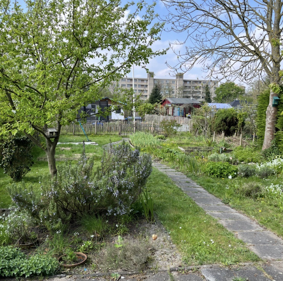
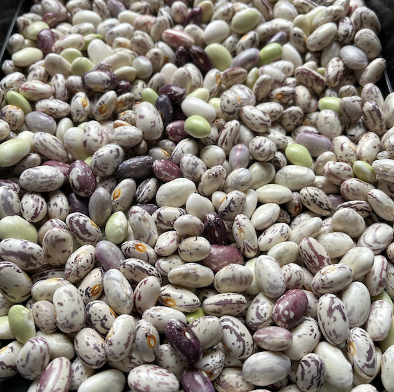
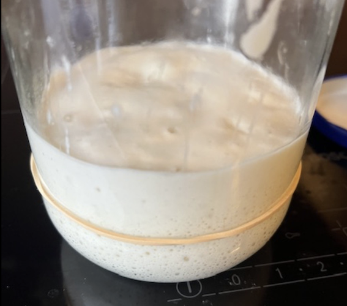
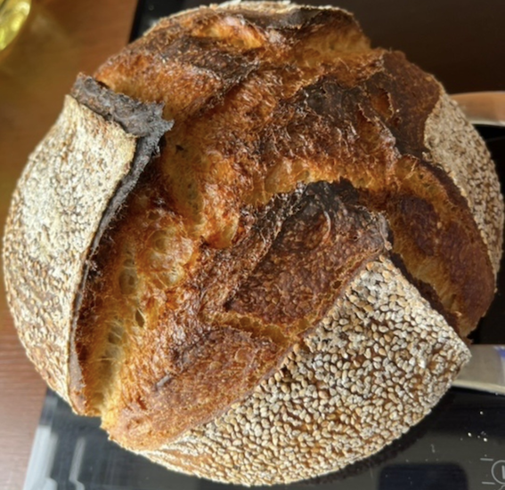
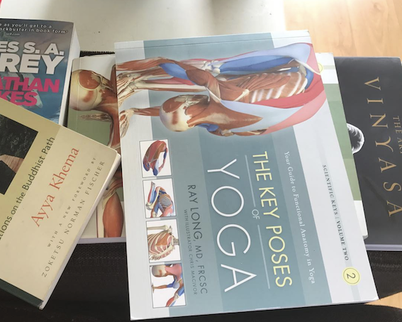
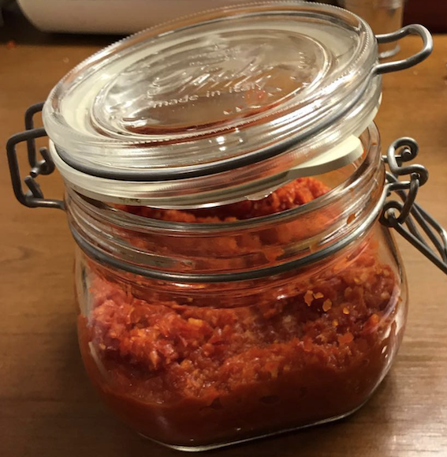

NOW / Blog / My reading list
Garden
Our garden
Our allotment garden is approximately 300m2. We've built a 4x5m shed with a little sink and a toilet. There is no electricity, thankfully. We have flowers growing, some trees and of course our veggies.
Harvest!
Looking for the english term for Kievitsbonen I found Dwarf French beans, Phaseolus. This is what we grew last year. This year we are going for a plethora of green beans!
Baking with sourdough
Meet Surya!
Meet Surya, my wonderful sourdough starter ☀️ steadily growing and getting stronger and more active. Lovely yoghurt-like smell. This is the way...#sourdough #starter #mandolorianquote
The smell of freshly baked bread
It is difficult to describe what for me is the magic of baking bread, especially sourdough bread. There is life in this process, so I need to talk with my starter as well as with the pan and with the oven..
More
I think it is important to get a feel for the starter and the dough, how they behave, what their strength is, if they are awake, or happy. Knowing their needs I strive to provide for those needs. That means giving it time, ensuring the right temperature, moisture, pressure even. And of course making sure everyone has enough to eat. Healthy food as well. I buy my flour from the local miller, Molen de Roos.Bookcase
About books
I will write something about books I like. And while you wait, here's a picture of our cat who looks innocent, sitting in one of our bookcases...
More photos
Fermenting
Sriracha
Let's see how this works out:I would like to make some sriracha sauce in the near future. The picture with this article is from a couple of years ago. Time to start looking for enough chilli peppers!
About this website
Inspired by both Tickfoot and Devine Lu Linvega, I wanted to create a website that will serve as a growing reflection of my actions. The intention is that it will keep growing without losing simplicity and remaining transparent. (#lifegoals, haha) Another characteristic is that it should be presented in as simple a manner as possible. I've considered gemtext but instead decided on plain and simple html. I crafted this manually, using the structure provided by Tickfoot. This means it is slow work, but maybe, hopefully, more valuable. For me many things that take time to do are more valuable, like sourdough, or fermentation or slow cooking or manual labour.
About me

I would describe myself as a romantic. Soft-hearted, sometimes light-headed. I try to remember to ask myself if what I want to say is true, kind and neccessary. But sometimes I forget...I'm also a nerd. I live in Emacs, I sometimes try my hand at Lisp code. I love to start a new Linux install on a partition or in a virtual machine. I never stay there, always returning to my Mac. I love my family without whom I would not be who I am now. _/\_I also love going to our allotment garden to work and enjoy the sounds of the many birds, or the wind.And then there's the wonder of the path of life. The secrets to breath, suffering, love, purpose, spirit, letting go and all the things that cannot be named. I happily walk on.
Who will walk with me on this path?